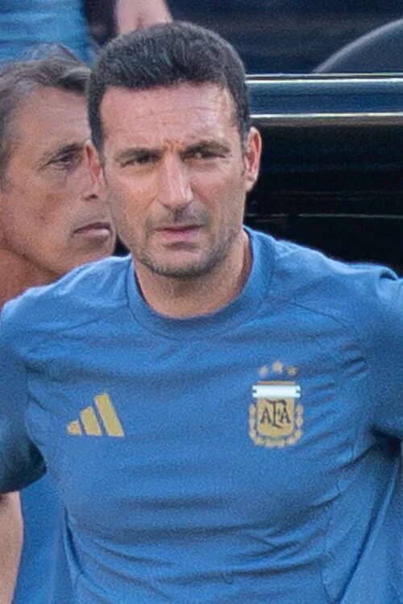

Photo source ↗Bryan Berlin · CC BY-SA 4.0
The profile
Lionel Scaloni
Lionel Scaloni was an Argentine player before moving into coaching. He took charge of Argentina’s senior national team and built a balanced side around Lionel Messi.
Scaloni played in Spain and Italy before moving into coaching. After working within Argentina’s national-team setup, he became head coach and assembled a cohesive squad around experienced and emerging players.
Scaloni guided Argentina to the 2022 World Cup title. The team beat France on penalties after a 3–3 final and ended a 36-year wait for another world crown.
2006Germany
Quarter-finals
Round of 16 Argentina2 : 1Mexico
- Hernan CRESPO10′
- Maxi RODRIGUEZ98′
- Rafael MARQUEZ6′
Argentinahome
Starting lineup
- Roberto ABBONDANZIERI
- Roberto AYALA
- Juan SORIN
- Gabriel HEINZE
- Lionel SCALONI
- Esteban CAMBIASSO
- Javier MASCHERANO
- Juan RIQUELME
- Maxi RODRIGUEZ
- Javier SAVIOLA
- Hernan CRESPO
Substitutions
- 75′Carlos TEVEZ on · Hernan CRESPO off
- 76′Pablo AIMAR on · Esteban CAMBIASSO off
- 84′Lionel MESSI on · Javier SAVIOLA off
Mexicoaway
Starting lineup
- Oswaldo SANCHEZ
- Carlos SALCIDO
- Rafael MARQUEZ
- Ricardo OSORIO
- Jose CASTRO
- Mario MENDEZ
- Andres GUARDADO
- Pavel PARDO
- Jared BORGETTI
- Ramon MORALES
- Jose FONSECA
Substitutions
- 38′Gerardo TORRADO on · Pavel PARDO off
- 66′Gonzalo PINEDA on · Andres GUARDADO off
- 74′ZINHA on · Ramon MORALES off
On the touchline
World Cup title as coach
Explore the matches from the title run
2022Qatar
Champion
Group C Argentina1 : 2Saudi Arabia
- Lionel MESSI10′ · pen.
- SALEH ALSHEHRI48′
- SALEM ALDAWSARI53′
Argentinahome
Starting lineup
- Emiliano MARTINEZ
- Nicolas TAGLIAFICO
- Cristian ROMERO
- Nicolas OTAMENDI
- Nahuel MOLINA
- Leandro PAREDES
- Rodrigo DE PAUL
- Angel DI MARIA
- Alejandro GOMEZ
- Lionel MESSI
- Lautaro MARTINEZ
Substitutions
- 59′Lisandro MARTINEZ on · Cristian ROMERO off
- 59′Enzo FERNANDEZ on · Leandro PAREDES off
- 59′Julian ALVAREZ on · Alejandro GOMEZ off
- 71′Marcos ACUNA on · Nicolas TAGLIAFICO off
Saudi Arabiaaway
Starting lineup
- MOHAMMED ALOWAIS
- ALI ALBULAYHI
- SAUD ABDULHAMID
- YASSER ALSHAHRANI
- Hassan ALTAMBAKTI
- SALMAN ALFARAJ
- ABDULELAH ALMALKI
- MOHAMED KANNO
- FERAS ALBRIKAN
- SALEM ALDAWSARI
- SALEH ALSHEHRI
Substitutions
- 45+4′NAWAF AL ABID on · SALMAN ALFARAJ off
- 78′SULTAN ALGHANNAM on · SALEH ALSHEHRI off
- 89′HAITHAM ASIRI on · FERAS ALBRIKAN off
- 89′Abdulelah ALAMRI on · NAWAF AL ABID off
- 90+9′MOHAMMED ALBURAYK on · YASSER ALSHAHRANI off
Group C Argentina2 : 0Mexico
- Lionel MESSI64′
- Enzo FERNANDEZ87′
Argentinahome
Starting lineup
- Emiliano MARTINEZ
- Gonzalo MONTIEL
- Marcos ACUNA
- Nicolas OTAMENDI
- Lisandro MARTINEZ
- Rodrigo DE PAUL
- Angel DI MARIA
- RODRIGUEZ GUIDO
- Alexis MAC ALLISTER
- Lionel MESSI
- Lautaro MARTINEZ
Substitutions
- 57′Enzo FERNANDEZ on · RODRIGUEZ GUIDO off
- 63′Julian ALVAREZ on · Lautaro MARTINEZ off
- 63′Nahuel MOLINA on · Gonzalo MONTIEL off
- 69′Exequiel PALACIOS on · Alexis MAC ALLISTER off
- 69′Cristian ROMERO on · Angel DI MARIA off
Mexicoaway
Starting lineup
- Guillermo OCHOA
- Nestor ARAUJO
- Cesar MONTES
- Hector MORENO
- Jesus GALLARDO
- Kevin ALVAREZ
- Hector HERRERA
- Andres GUARDADO
- Luis CHAVEZ
- Alexis VEGA
- Hirving LOZANO
Substitutions
- 42′Erick GUTIERREZ on · Andres GUARDADO off
- 66′Uriel ANTUNA on · Alexis VEGA off
- 66′Raul JIMENEZ on · Kevin ALVAREZ off
- 73′Roberto ALVARADO on · Hirving LOZANO off
Group C Poland0 : 2Argentina
- Alexis MAC ALLISTER46′
- Julian ALVAREZ67′
Polandhome
Starting lineup
- Wojciech SZCZESNY
- Matty CASH
- Jakub KIWIOR
- Kamil GLIK
- Bartosz BERESZYNSKI
- Krystian BIELIK
- Grzegorz KRYCHOWIAK
- Karol SWIDERSKI
- Piotr ZIELINSKI
- Przemyslaw FRANKOWSKI
- Robert LEWANDOWSKI
Substitutions
- 46′Jakub KAMINSKI on · Przemyslaw FRANKOWSKI off
- 46′Michal SKORAS on · Karol SWIDERSKI off
- 62′Damian SZYMANSKI on · Krystian BIELIK off
- 72′Artur JEDRZEJCZYK on · Bartosz BERESZYNSKI off
- 83′Krzysztof PIATEK on · Grzegorz KRYCHOWIAK off
Argentinaaway
Starting lineup
- Emiliano MARTINEZ
- Marcos ACUNA
- Cristian ROMERO
- Nicolas OTAMENDI
- Nahuel MOLINA
- Rodrigo DE PAUL
- Alexis MAC ALLISTER
- Enzo FERNANDEZ
- Julian ALVAREZ
- Lionel MESSI
- Angel DI MARIA
Substitutions
- 59′Leandro PAREDES on · Angel DI MARIA off
- 59′Nicolas TAGLIAFICO on · Marcos ACUNA off
- 79′Lautaro MARTINEZ on · Julian ALVAREZ off
- 79′German PEZZELLA on · Enzo FERNANDEZ off
- 83′Thiago ALMADA on · Alexis MAC ALLISTER off
Round of 16 Argentina2 : 1Australia
- Lionel MESSI35′
- Julian ALVAREZ57′
- Enzo FERNANDEZ77′ · own goal
Argentinahome
Starting lineup
- Emiliano MARTINEZ
- Marcos ACUNA
- Cristian ROMERO
- Nicolas OTAMENDI
- Nahuel MOLINA
- Rodrigo DE PAUL
- Alexis MAC ALLISTER
- Enzo FERNANDEZ
- Julian ALVAREZ
- Lionel MESSI
- Alejandro GOMEZ
Substitutions
- 50′Lisandro MARTINEZ on · Alejandro GOMEZ off
- 71′Lautaro MARTINEZ on · Julian ALVAREZ off
- 71′Nicolas TAGLIAFICO on · Marcos ACUNA off
- 80′Gonzalo MONTIEL on · Alexis MAC ALLISTER off
- 80′Exequiel PALACIOS on · Nahuel MOLINA off
Australiaaway
Starting lineup
- Mathew RYAN
- Milos DEGENEK
- Kye ROWLES
- Aziz BEHICH
- Harry SOUTTAR
- Mathew LECKIE
- Aaron MOOY
- Riley McGREE
- Keanu BACCUS
- Mitch DUKE
- Jackson IRVINE
Substitutions
- 58′Craig GOODWIN on · Riley McGREE off
- 58′Ajdin HRUSTIC on · Keanu BACCUS off
- 71′Garang KUOL on · Mathew LECKIE off
- 71′Jamie MacLAREN on · Mitch DUKE off
- 71′Fran KARACIC on · Milos DEGENEK off
Quarterfinal Netherlands2 : 2Argentina
- Wout WEGHORST83′
- Wout WEGHORST90+11′
- Nahuel MOLINA35′
- Lionel MESSI73′ · pen.
Netherlandshome
Starting lineup
- Andries NOPPERT
- Jurrien TIMBER
- Virgil VAN DIJK
- Nathan AKE
- Cody GAKPO
- Marten DE ROON
- Daley BLIND
- Frenkie DE JONG
- Denzel DUMFRIES
- Steven BERGWIJN
- Memphis DEPAY
Substitutions
- 46′Teun KOOPMEINERS on · Marten DE ROON off
- 46′Steven BERGHUIS on · Steven BERGWIJN off
- 64′Luuk DE JONG on · Daley BLIND off
- 78′Wout WEGHORST on · Memphis DEPAY off
- 113′Noa LANG on · Cody GAKPO off
Argentinaaway
Starting lineup
- Emiliano MARTINEZ
- Cristian ROMERO
- Nicolas OTAMENDI
- Lisandro MARTINEZ
- Rodrigo DE PAUL
- Marcos ACUNA
- Alexis MAC ALLISTER
- Enzo FERNANDEZ
- Nahuel MOLINA
- Julian ALVAREZ
- Lionel MESSI
Substitutions
- 67′Leandro PAREDES on · Rodrigo DE PAUL off
- 78′Nicolas TAGLIAFICO on · Marcos ACUNA off
- 78′German PEZZELLA on · Cristian ROMERO off
- 82′Lautaro MARTINEZ on · Julian ALVAREZ off
- 106′Gonzalo MONTIEL on · Nahuel MOLINA off
- 112′Angel DI MARIA on · Lisandro MARTINEZ off
Semifinal Argentina3 : 0Croatia
- Lionel MESSI34′ · pen.
- Julian ALVAREZ39′
- Julian ALVAREZ69′
Argentinahome
Starting lineup
- Emiliano MARTINEZ
- Nicolas TAGLIAFICO
- Cristian ROMERO
- Nicolas OTAMENDI
- Nahuel MOLINA
- Leandro PAREDES
- Rodrigo DE PAUL
- Alexis MAC ALLISTER
- Enzo FERNANDEZ
- Julian ALVAREZ
- Lionel MESSI
Substitutions
- 62′Lisandro MARTINEZ on · Leandro PAREDES off
- 74′Exequiel PALACIOS on · Rodrigo DE PAUL off
- 74′Paulo DYBALA on · Julian ALVAREZ off
- 86′Angel CORREA on · Alexis MAC ALLISTER off
- 86′Juan FOYTH on · Nahuel MOLINA off
Croatiaaway
Starting lineup
- Dominik LIVAKOVIC
- Dejan LOVREN
- Borna SOSA
- Josko GVARDIOL
- Josip JURANOVIC
- Mateo KOVACIC
- Luka MODRIC
- Marcelo BROZOVIC
- Ivan PERISIC
- Andrej KRAMARIC
- Mario PASALIC
Substitutions
- 46′Nikola VLASIC on · Mario PASALIC off
- 46′Mislav ORSIC on · Borna SOSA off
- 50′Bruno PETKOVIC on · Marcelo BROZOVIC off
- 72′Marko LIVAJA on · Andrej KRAMARIC off
- 81′Lovro MAJER on · Luka MODRIC off
Final Argentina3 : 3France
- Lionel MESSI23′ · pen.
- Angel DI MARIA36′
- Lionel MESSI108′
- Kylian MBAPPE80′ · pen.
- Kylian MBAPPE81′
- Kylian MBAPPE118′ · pen.
Argentinahome
Starting lineup
- Emiliano MARTINEZ
- Nicolas TAGLIAFICO
- Cristian ROMERO
- Nicolas OTAMENDI
- Nahuel MOLINA
- Rodrigo DE PAUL
- Alexis MAC ALLISTER
- Enzo FERNANDEZ
- Julian ALVAREZ
- Lionel MESSI
- Angel DI MARIA
Substitutions
- 64′Marcos ACUNA on · Angel DI MARIA off
- 91′Gonzalo MONTIEL on · Nahuel MOLINA off
- 102′Lautaro MARTINEZ on · Julian ALVAREZ off
- 102′Leandro PAREDES on · Rodrigo DE PAUL off
- 116′German PEZZELLA on · Alexis MAC ALLISTER off
- 120+1′Paulo DYBALA on · Nicolas TAGLIAFICO off
Franceaway
Starting lineup
- Hugo LLORIS
- Raphael VARANE
- Jules KOUNDE
- Dayot UPAMECANO
- Theo HERNANDEZ
- Antoine GRIEZMANN
- Aurelien TCHOUAMENI
- Adrien RABIOT
- Olivier GIROUD
- Kylian MBAPPE
- Ousmane DEMBELE
Substitutions
- 41′Randal KOLO MUANI on · Ousmane DEMBELE off
- 41′Marcus THURAM on · Olivier GIROUD off
- 71′Kingsley COMAN on · Antoine GRIEZMANN off
- 71′Eduardo CAMAVINGA on · Theo HERNANDEZ off
- 96′Youssouf Fofana on · Adrien RABIOT off
- 113′Ibrahima KONATE on · Raphael VARANE off
- 120+1′Axel DISASI on · Jules KOUNDE off